Md. Ibne Joha’s research lies at the intersection of AI, edge computing, and intelligent autonomous systems, addressing critical challenges in real-time performance, scalability, and reliability for next-generation IoT and robotic applications. His current work focuses on autonomous navigation for both UAVs and UGVs, as well as IoT- and AI-enabled honeybee colony health monitoring, integrating advanced sensing, perception, and decision-making frameworks within resource-constrained environments. By leveraging deep learning, machine learning, and Edge AI techniques, he develops efficient, deployable models that bridge the gap between theoretical innovation and real-world implementation. His research emphasizes robust and adaptive systems for dynamic environments, contributing to advancements in robotics, precision agriculture, smart energy management, andintelligent monitoring systems. Through interdisciplinary approaches, Joha continues to advance the frontiers of AIoT, autonomous systems, and embedded intelligence for sustainable and impactful real-world applications..
⚡ Energy & AI
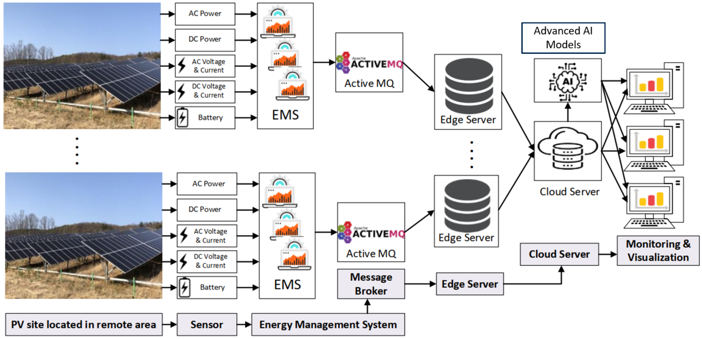
🏭 IIoT & AI
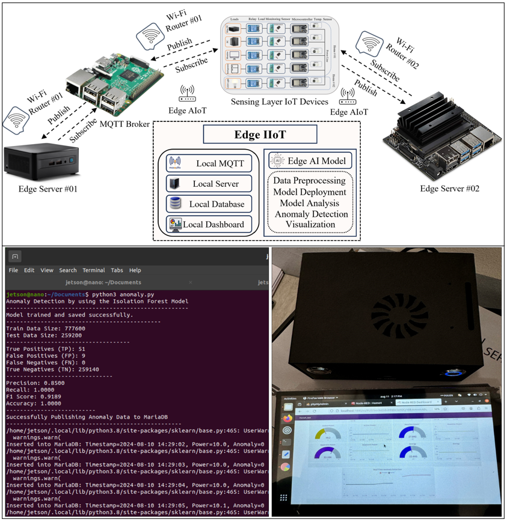
📲 Edge AI & NILM
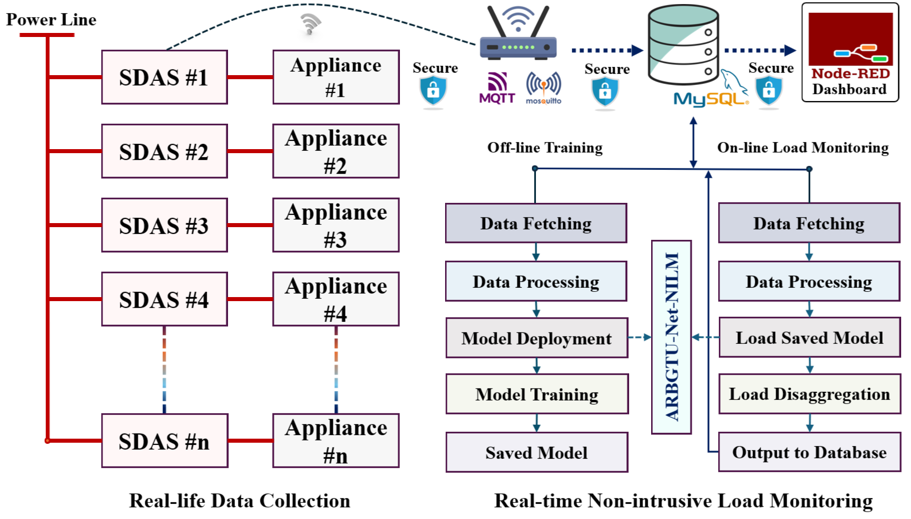
🌍 IoT & AI
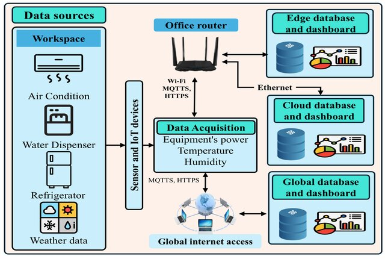
🔍 XAI
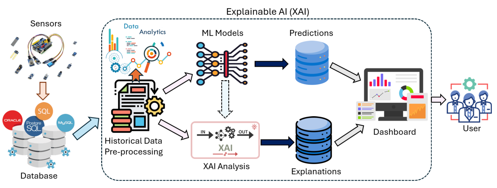
🔐 Federated Learning
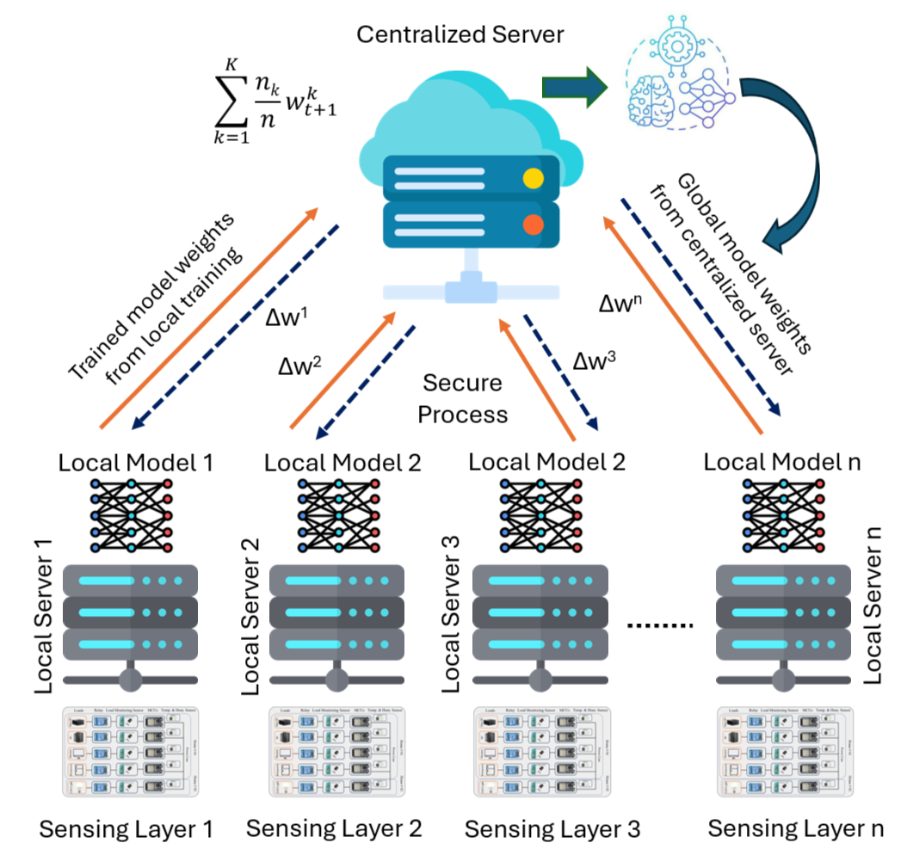
🚁 UAV & Control
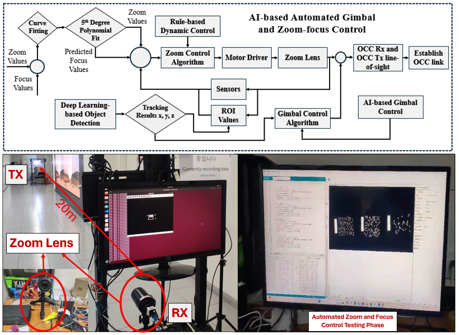
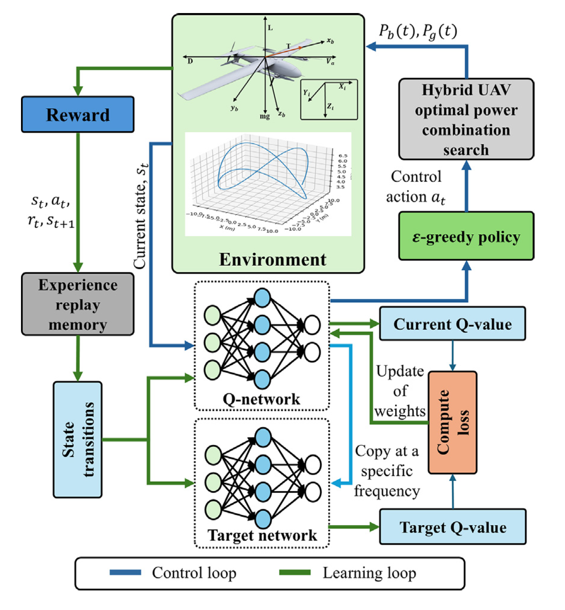
🔋 AI & EV
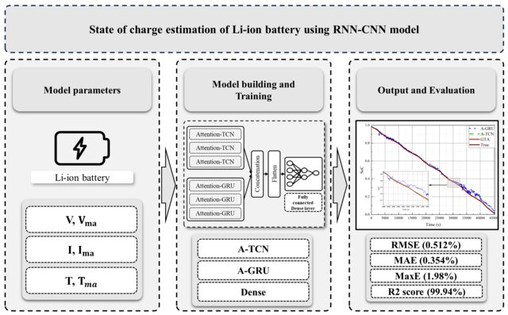
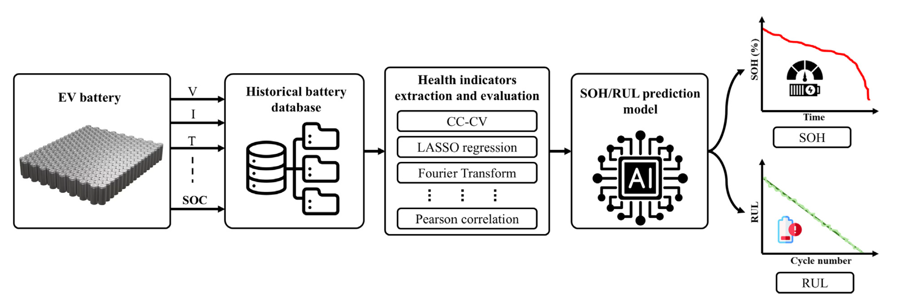
⚡ Smart Grid

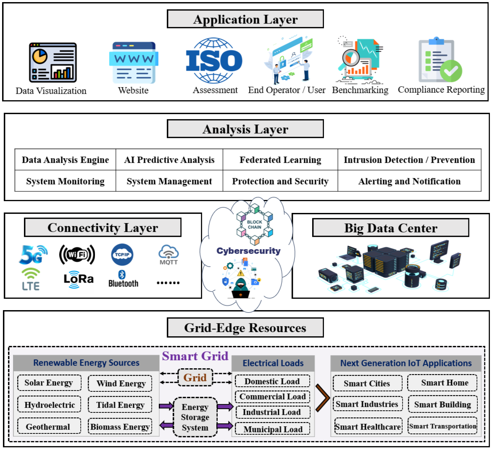